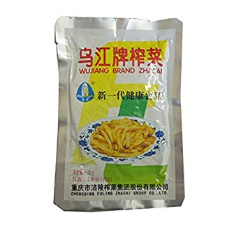

congee
chinese bread soup
- leftover rice
- put leftover cooked rice in rice cooker (or if too much, in a big pan), with 4x as much water as there is rice. you get nice congee after 2 runs through the rice cooker, or about an hour simmering on the stove. May need to be topped up with water regularly, and stir to prevent lumps/sticking to bottom.
- (not tested shortcut, but looks promising) https://thewoksoflife.com/20-minute-congee-recipe/
-
makes a great breakfast with:
- thousand year egg

- tea egg / fried egg
- fermented tofu

- chopped spring onions
- pickled mustard root
- chopped coriander
you tiao (long donut) Laoganma chilli oil
Laoganma chilli oil